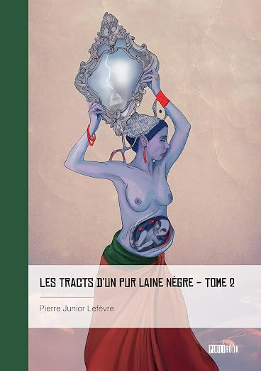
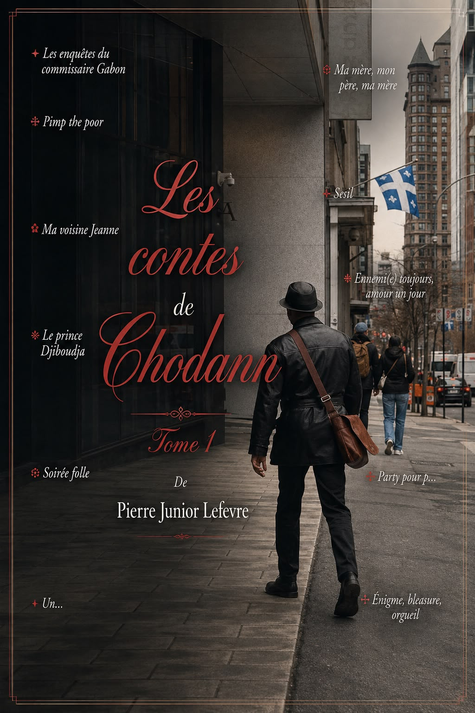
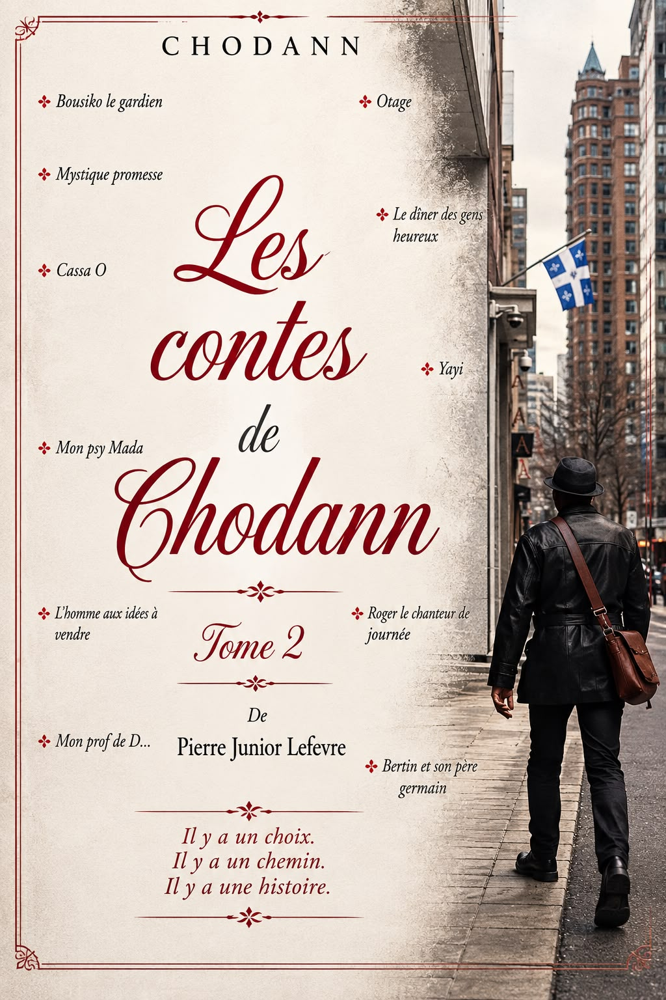

Tome I
Les Tracts — Tome I
Plus de 150 textes — la condition noire, la mémoire, la transmission.
Acheter le ebook
Prélude
Après la réédition de plus de 300 textes réunis en deux tomes des Tracts d'un pur laine nègre, publiés aux Éditions Publibook, LPJ revient avec 22 histoires.
Un univers différent, mais toujours la même plume engagée et le même objectif : amasser des fonds pour ouvrir des bibliothèques dans les quartiers défavorisés, en commençant par Haïti.
Un projet visant à offrir l'accès à la lecture, à la culture et à l'éducation — un livre à la fois, un quartier après l'autre.
Deux corpus, quatre tomes, une même voix. Chaque livre vendu participe directement au financement des bibliothèques.
Plus de 300 textes courts, engagés — condition noire, mémoire, transmission. Réunis en deux tomes chez Publibook.
Tome I
Plus de 150 textes — la condition noire, la mémoire, la transmission.
Acheter le ebook
Tome II
Suite du premier tome — la plume s'élargit. La langue, l'histoire, l'identité.
Acheter sur AmazonVingt-deux histoires en deux tomes — onze par tome. Publibook.
« Il y a un choix.
Il y a un chemin.
Il y a une histoire. »

Tome 1 · Le versant sombre
Enquêtes, portraits, échos de rue — le versant nocturne.

Tome 2 · Le versant clair
L'autre versant, en pleine lumière — mystique, tendresse, contradictions.
— Édition signée —
Pour ceux qui veulent tenir en main un exemplaire dédicacé de la main de l'auteur, chaque commande passée directement est signée, personnalisée si vous le souhaitez, et postée depuis Montréal.
Un courriel avec le tome souhaité et le prénom pour la dédicace.
Par virement Interac — mêmes coordonnées que le don, avec la mention « Commande ».
Livre signé de la main de l'auteur, envoyé postalement à l'adresse indiquée.

La mission
Ouvrir, équiper et faire vivre des bibliothèques dans les quartiers défavorisés. Commencer par Haïti — Port-au-Prince et au-delà — parce que c'est là que tout a commencé, et là que tout doit recommencer.
Trois piliers
Un même geste : remettre dans les mains des enfants — et des adultes — les outils dont ils ont été privés. Des livres. Des ordinateurs. De la musique. Un endroit où s'asseoir et apprendre.
La méthode
Les ventes des deux tomes des Tracts et des deux tomes des Contes de Chodann alimentent directement le fonds de construction et d'équipement. Chaque don complète, accélère, prolonge.
— Où en est le projet —
Un projet vivant, mis à jour au fil des dons et des livraisons. Voici les objectifs de la première année — et où en est la collecte au moment où vous lisez ces lignes.
1 500 livres
≈ 120 collectés à ce jour
20 ordinateurs
4 reçus, prêts à partir
25 000 CAD
Collecte en cours
01 bibliothèque
Site identifié · Port-au-Prince
Chiffres mis à jour à mesure que le projet avance — dernière révision au lancement du site.
Comment aider
Acheter, donner, transmettre. Toute contribution — même la plus discrète — entre dans la même mission : ouvrir une porte de plus vers la lecture.
01
Les tomes des Tracts et des Contes de Chodann chez Publibook. La première façon d'aider.
02
Romans, jeunesse, manuels, dictionnaires — toute lecture qui peut prendre place sur une étagère.
03
Pour la lecture numérique et la recherche.
04
Pour copier, partager, transmettre.
05
Cahiers, stylos, sacs — l'essentiel.
06
La culture ne s'arrête pas aux pages. Tout instrument, en état, trouve sa place.
07
Étagères, tables, chaises — l'infrastructure d'un lieu où l'on peut s'asseoir et lire.
Faire un don
Don par virement Interac vers la Banque TD. Indiquez la mention « Don » dans la transaction pour qu'il soit alloué directement au projet bibliothèques.
— Ils portent avec nous —
Sur simple accord, votre nom peut apparaître ici — pas de somme, juste une reconnaissance publique pour celles et ceux qui souhaitent être visibles. Ajoutez la mention « Afficher mon nom » à votre virement, ou écrivez-nous.
Ce mur est vivant — de nouvelles cartes s'ajoutent au fil des dons.
— Porte ouverte —
Peintres, musicien·nes, illustrateur·rices, artisans, photographes — la porte est ouverte à toutes celles et ceux qui souhaitent exposer, vendre ou partager leur travail au bénéfice du même projet.
Œuvre en édition limitée, mini-concert, atelier, résidence d'écriture — l'idée est de multiplier les moyens de rassembler des fonds sans se limiter à la littérature.
Mèsi anpil
Chaque livre acheté, chaque carton donné, chaque virement reçu — c'est un rayon de plus, une chaise de plus, une lampe de plus dans un endroit où il n'y en avait pas.
— Pierre Junior Lefèvre